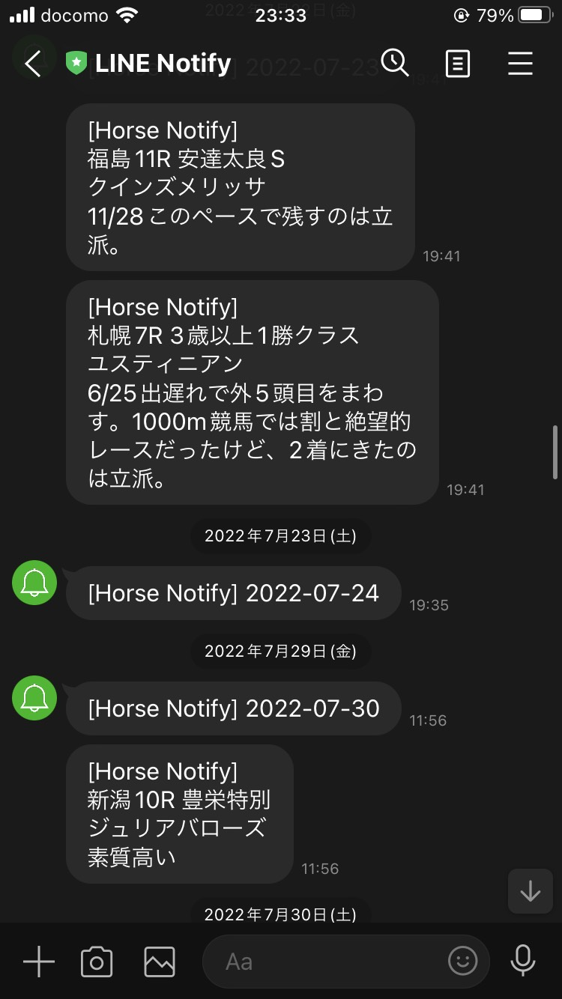

Machine Learning Model for predicting horse race [Ongoing]
The model itself is private.
Tree based learning algorithm
Neural Network
Web scraping
Line Notify for entries of favarite racehorses
I developed a system notifying entries of favarite racehorses so that I can save the costs of subscription to apps.

HTML
Google Apps Script
Web scraping
GitHub Workflow
Developing Machine Learning API (server-side)
as a full time internship at SoftBank
Python
AWS
Docker
Kubernetes
TensorFlow
Research on computational calculation for topological materials
as a master course student at University of Tokyo
You can see the abstract of my research here.
Computing resources are provided by ISSP Supercomputer Center.
Physics
material science
Large-scale computation
First-principles calculation